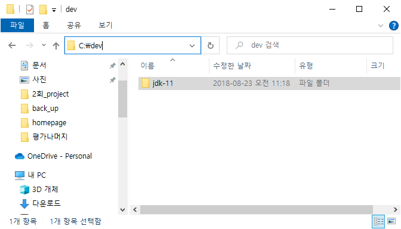
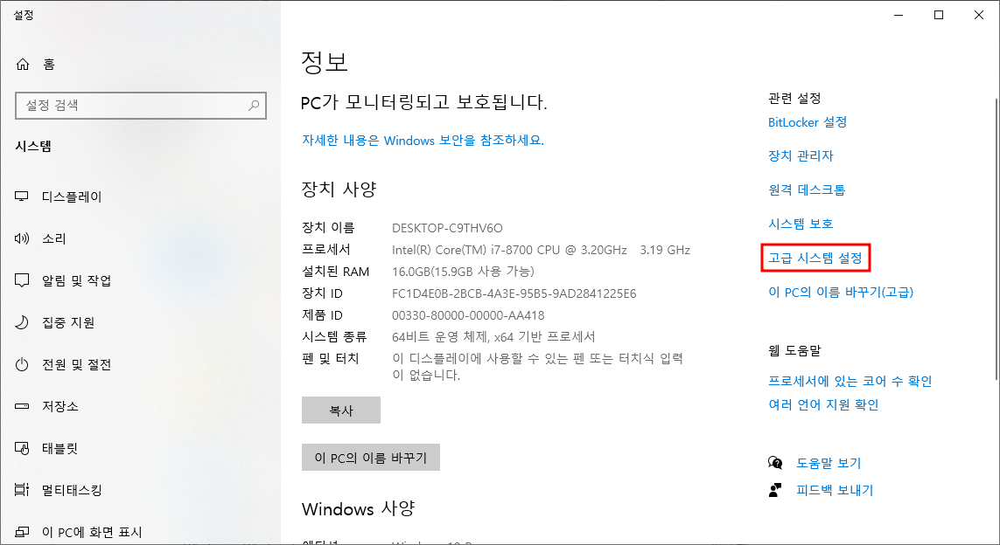
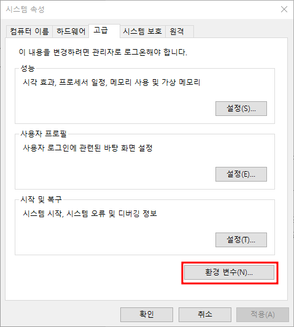
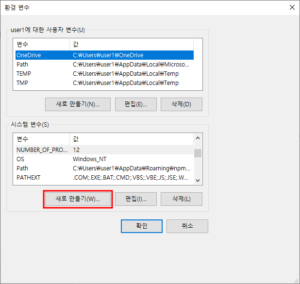
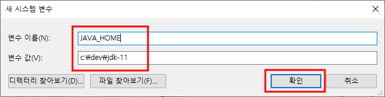
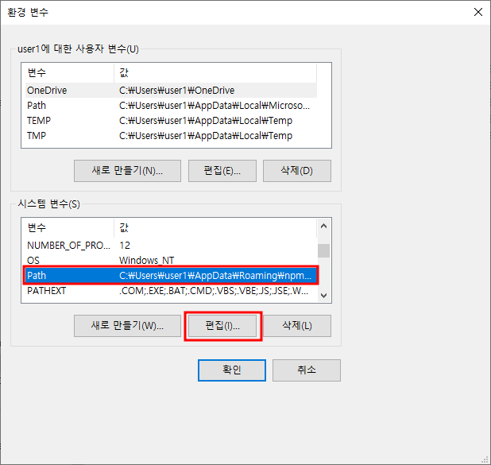
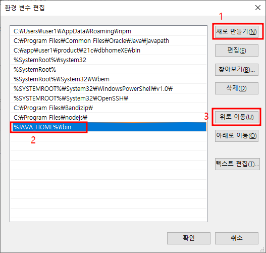
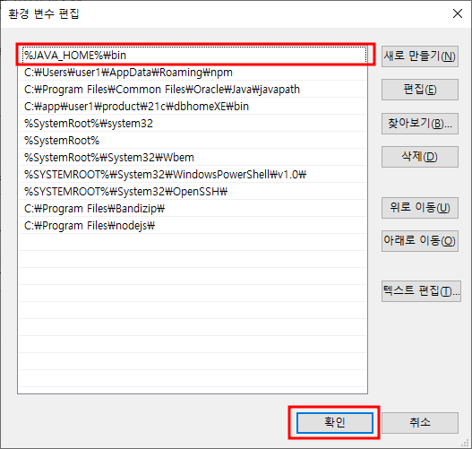

c:\dev 폴더를 만들어 이 폴더에서 압축풀기
2.1. 경로 복사
c:\dev\jdk-112.2. 키보드에서 win + Pause Break를 눌러 설정에 들어가기
- 환경변수 선택
- 새로만들기 선택
- 변수이름 : JAVA_HOME, 변수 값 : c:\dev\jdk-11 경로 넣고 확인
- Path 선택하고 편집 선택
- 새로만들기 클릭후 %JAVA_HOME%\bin 을 넣고 Enter친 후 맨 위로 이동 시키기
- 최종 화면. 확인 버튼
